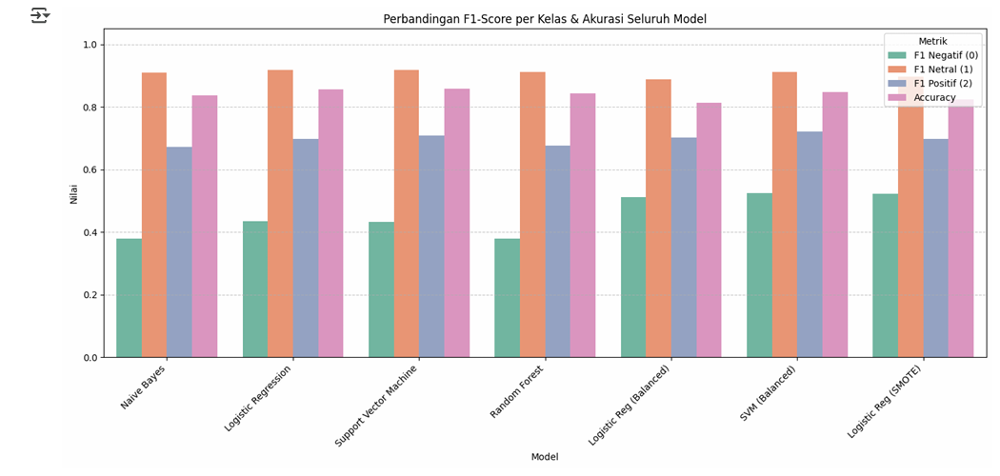
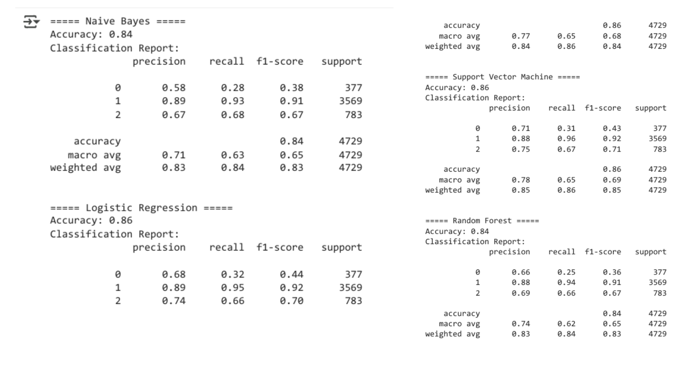
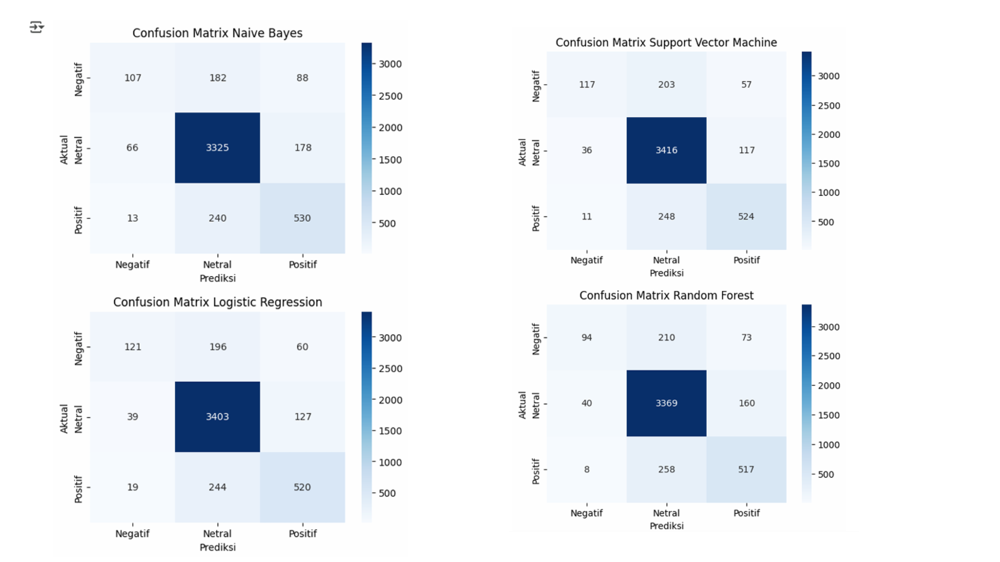
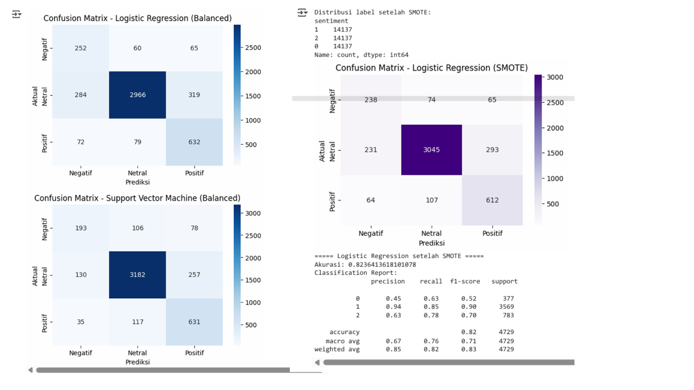
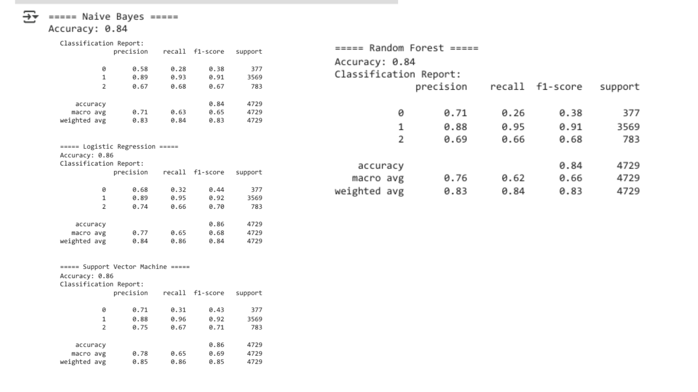
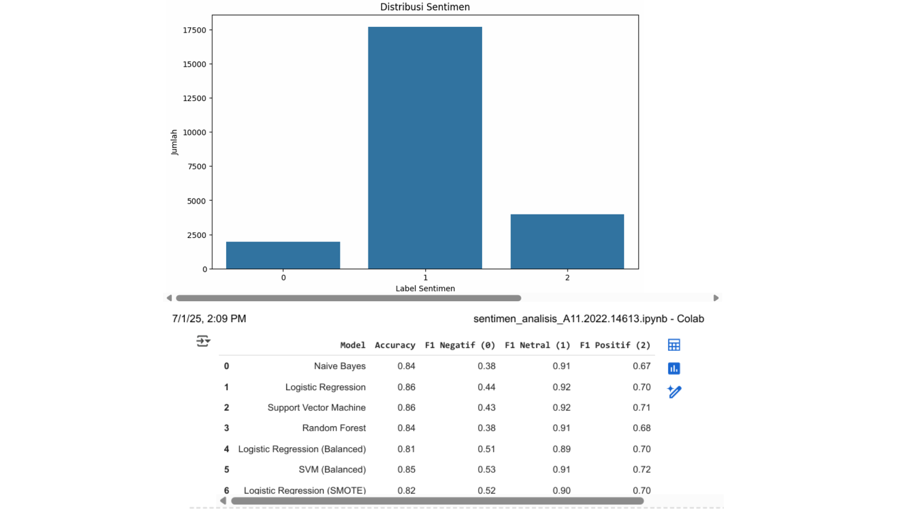
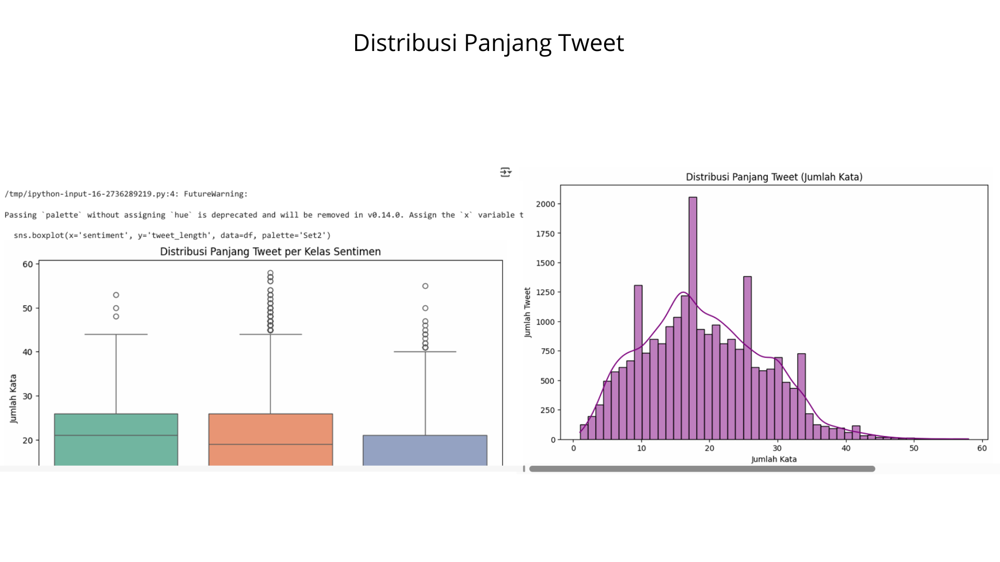

Sentimen Analisis Covid-19 Twitter Dataset - Detail Proyek








Data Analyst (NLP)
Python, Pandas, NumPy, Matplotlib, Seaborn, NLTK, Scikit-learn, Imbalanced-learn (SMOTE), Google Colab, MultinomialNB, Logistic Regression, Support Vector Machine (SVM), Random Forest Classifier, WordCloud.
TF-IDF, RegexpTokenizer, PorterStemmer, Grid Search, Classification Report, Confusion Matrix.
Background
- Media sosial telah berkembang menjadi platform utama bagi masyarakat untuk menyampaikan aspirasi, kritik, dan keluhan terkait kebijakan pemerintah[cite: 14].
- Kebijakan Pemberlakuan Pembatasan Kegiatan Masyarakat (PPKM) yang diterapkan di Indonesia guna mengontrol penyebaran COVID-19 banyak menyita perhatian publik[cite: 14].
- Untuk mengetahui persepsi masyarakat secara objektif, dilakukan analisis sentimen terhadap tweet atau cuitan Twitter berbahasa Indonesia. Namun, tantangan utama dalam data teks media sosial adalah ketidakseimbangan kelas (class imbalance) yang dapat menyebabkan bias pada model[cite: 14, 15].
Objective
- Membangun model klasifikasi teks untuk mengkategorikan sentimen masyarakat terhadap kebijakan PPKM ke dalam tiga kelas: Negatif, Netral, dan Positif[cite: 14].
- Menerapkan teknik preprocessing dan ekstraksi fitur yang optimal.
- Mengatasi masalah ketidakseimbangan data menggunakan strategi class weight dan Synthetic Minority Over-sampling Technique (SMOTE) guna meningkatkan performa model pada kelas minoritas[cite: 15, 17].
Dataset
- Sumber Data: Diambil dari platform Kaggle dengan judul "Dataset Perasaan Twitter Indonesia—PPKM"[cite: 14].
- Struktur Data: Terdiri dari 23.644 baris data dengan 4 fitur utama: Date, User, Tweet, dan Sentiment[cite: 14, 21].
- Label Target (Sentiment):
- 0 = Negatif (mencakup ~4–5% data)[cite: 14, 15]
- 1 = Netral (mendominasi >70% data)[cite: 14, 15]
- 2 = Positif (mencakup ~11% data)[cite: 15]
What
Proyek ini merupakan sistem pemrosesan bahasa alami (Natural Language Processing/NLP) end-to-end berbahasa Indonesia yang mengintegrasikan pembersihan data teks (text preprocessing), ekstraksi fitur berbasis statistik menggunakan TF-IDF dengan batas maksimal 5.000 fitur, pemodelan Machine Learning, serta evaluasi mendalam untuk mengatasi distribusi data yang tidak seimbang (imbalanced dataset)[cite: 14, 15, 17].
Why
- Distribusi Data yang Tidak Seimbang: Lebih dari 70% data terkonsentrasi pada kelas netral (1), sementara kelas negatif (0) sangat sedikit. Jika dibiarkan, model akan menjadi bias, cenderung hanya mengenali kelas mayoritas, dan mengabaikan kelas minoritas[cite: 15].
- Evaluasi Strategi Penanganan: Penelitian ini penting untuk membandingkan efektivitas penggunaan parameter bawaan seperti
class_weight='balanced'versus teknik oversampling tingkat lanjut seperti SMOTE dalam mengoptimalkan metrik F1-score pada data teks berbahasa Indonesia[cite: 15, 17, 19].
How
- Preprocessing Data: Menggunakan pustaka NLTK yang meliputi Lowercase (penyeragaman huruf kecil), Tokenisasi (mengambil kata alfanumerik menggunakan
RegexpTokenizer), Stopword Removal (penghapusan kata umum bahasa Indonesia), dan Stemming (PorterStemmer)[cite: 15]. - Ekstraksi Fitur: Mengubah teks bersih menjadi representasi matriks numerik menggunakan
TF-IDF Vectorizer(maksimal 5.000 fitur term unik)[cite: 15, 17]. - Pemodelan Machine Learning: Melatih data menggunakan rasio pembagian 80:20 untuk train-test split pada empat algoritma utama: Naive Bayes (
MultinomialNB), Logistic Regression, Support Vector Machine (SVM), dan Random Forest[cite: 17, 20]. - Penanganan Imbalance Data: Menerapkan pendekatan
class_weight='balanced'serta teknik augmentasi oversampling sintetis SMOTE pada data latih sehingga jumlah sampel tiap kelas menjadi seimbang (masing-masing 14.137 data)[cite: 15, 17, 26].
Results
- Model Baseline Awal: Model Logistic Regression dan SVM standar mencatat akurasi keseluruhan tertinggi sekitar 86%, tetapi memiliki kelemahan serius dalam mengenali kelas negatif (skor F1-score kelas negatif rendah, yaitu $\approx 0.43-0.44$)[cite: 17, 29].
- Setelah Penerapan SMOTE: Meskipun akurasi keseluruhan sedikit menyesuaikan ke angka 82%, penerapan Logistic Regression dengan SMOTE menghasilkan performa yang jauh lebih adil dan seimbang secara merata di seluruh kelas[cite: 17, 19, 27]:
- F1-Score Kelas Negatif (0) meningkat signifikan menjadi 0.52[cite: 27]
- F1-Score Kelas Netral (1) stabil di angka 0.90[cite: 27]
- F1-Score Kelas Positif (2) stabil di angka 0.70[cite: 27]
Conclusion
- Keberhasilan klasifikasi teks sentimen sangat bergantung pada kombinasi preprocessing yang bersih, representasi fitur TF-IDF yang tepat, serta penanganan distribusi kelas yang tidak seimbang[cite: 19].
- Teknik oversampling menggunakan SMOTE terbukti jauh lebih efektif dalam memperbaiki kelemahan model terhadap kelas minoritas (negatif dan positif) dibandingkan hanya mengandalkan pengaturan bobot kelas (class weighting) semata[cite: 19].
- Pendekatan ini terbukti handal dan dapat direplikasi untuk menangani tantangan serupa pada proyek analisis sentimen teks berbasis Bahasa Indonesia lainnya[cite: 19].